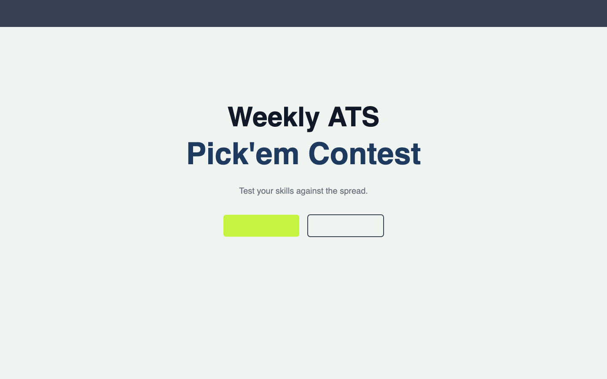
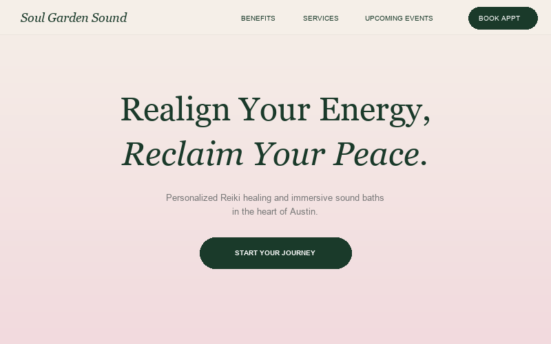
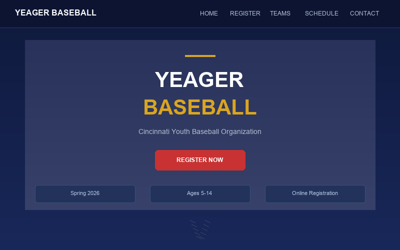

Robert Neville, CPA
Finance Director with 12+ years in FP&A, now building real applications with AI.
Based in Cincinnati.
Selected Work
A full-stack sports pick'em platform where users compete weekly picking college football games against the spread. User auth, automated odds integration, live standings, in-app chat, and admin tools.
Built collaboratively with Claude as a co-developer—Claude is listed as a contributor on the GitHub repo.

A client website for a Reiki healing and sound bath practice in Austin. Modern responsive design with CMS integration so the owner can update content without touching code. Email collection and Instagram DM booking flow.

A player registration system for a Cincinnati youth baseball organization. Online forms, digital signatures, birth certificate uploads, and instant confirmation—replaced the entire paper-based process.
Built end-to-end using Manus AI.

About
I'm a CPA and Finance Director with 12+ years of FP&A experience across high-growth tech companies—from EY audit to leading finance at a 250-person cybersecurity SaaS startup. I've orchestrated $100M+ fundraises, built financial dashboards, and designed data architectures in Snowflake.
More recently, I led the evaluation and implementation of Claude Enterprise at Resilience and started building things myself. The projects above aren't demos—they're live applications with real users, built using AI-powered development tools. I'm most interested in what becomes possible when you pair senior-level business judgment with the ability to actually build.
Tools I work with
Interested in what I'm building, have a question, or just want to connect?
rob.neville22@gmail.com